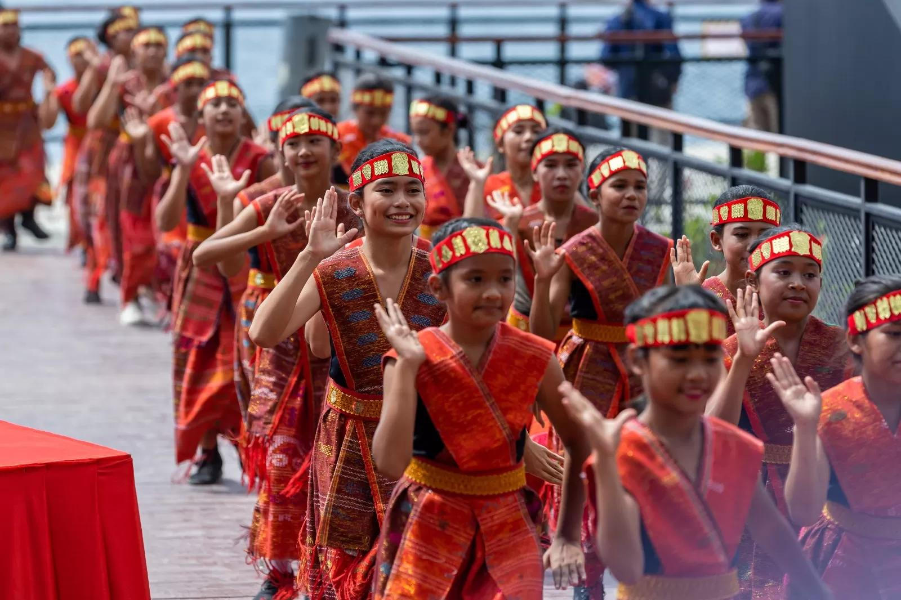

Experience the Vibrant Events of Lake Toba
Celebrate the rich traditions, music, culture, and festivals that bring Lake Toba to life throughout the year. Discover authentic Batak heritage through unforgettable events and community celebrations.
Featured Event

Festival Danau Toba
Festival Danau Toba is the region's signature cultural celebration featuring traditional Batak performances, culinary exhibitions, local crafts, music, sports activities, and cultural showcases held across destinations surrounding Lake Toba.
Learn MoreUpcoming Events
Festivals and celebrations held around Lake Toba throughout the year.
Cultural Experiences
Annual Event Timeline
A month-by-month look at when Lake Toba's festivals typically take place. Official dates are announced closer to each event.
Event Gallery
Celebrate the Spirit of Lake Toba
From colorful festivals to timeless Batak traditions, every visit offers unforgettable cultural experiences waiting to be explored.